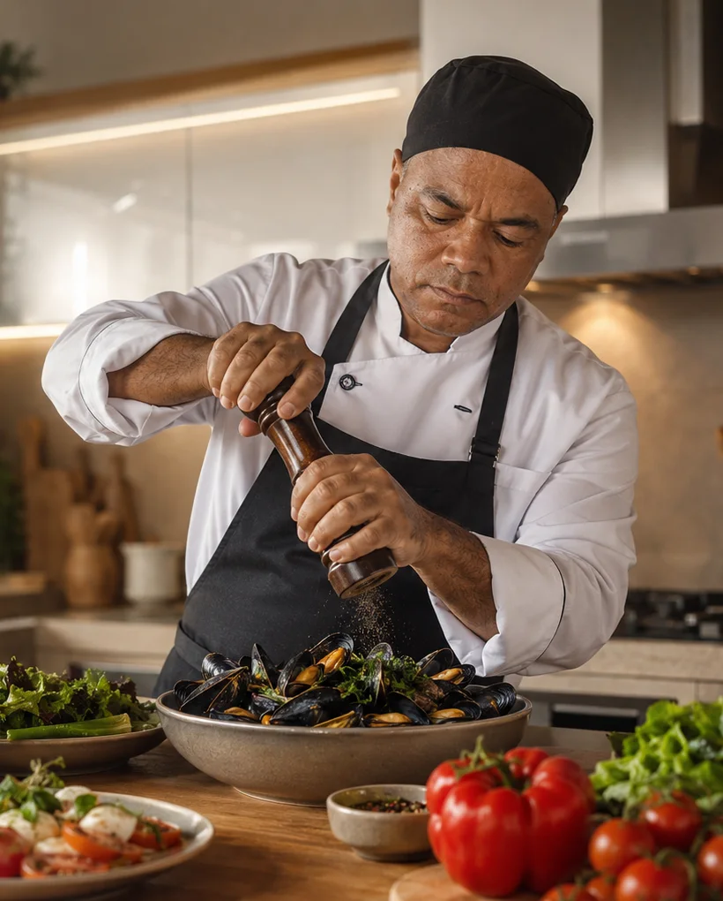

Personal Chef em Brasília
Alta gastronomia com o acolhimento de casa.
O Chef Gil cria experiências sob medida, combinando técnica, cuidado e atenção genuína para que cada encontro seja memorável.
Atendimento exclusivoDo primeiro contato à finalização
Menu personalizadoPreferências e restrições respeitadas
Distrito FederalAtendimento em raio de até 100 km
Gestão cuidadosaAgenda, orçamento e confirmação organizados
Experiências
Serviços pensados para cada ocasião.
Do jantar íntimo ao evento corporativo, cada proposta é construída com equilíbrio entre sabor, apresentação e hospitalidade.

Chef Gil
Presença próxima. Execução precisa.
Um atendimento verdadeiramente personalizado começa pela escuta. Gil entende o momento, o perfil dos convidados e as expectativas para transformar o serviço em uma experiência leve, elegante e acolhedora.
- Planejamento alinhado ao orçamento e à ocasião.
- Cardápios adaptados a preferências e restrições alimentares.
- Organização do preparo, serviço e finalização.
- Comunicação direta e humanizada em todas as etapas.
“Exclusividade não é excesso. É perceber cada detalhe, respeitar cada pessoa e entregar exatamente o que aquele momento pede.”
Receitas e bastidores
Ver todosConteúdo servido pelo Chef.
Seu próximo encontro
Solicitar orçamentoVamos criar uma proposta à altura da ocasião?
Conte ao Chef Gil o que você imagina. A solicitação será registrada e o atendimento continuará pelo WhatsApp.